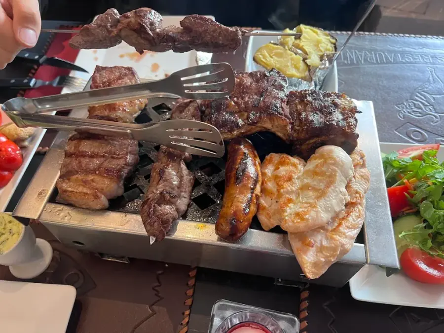
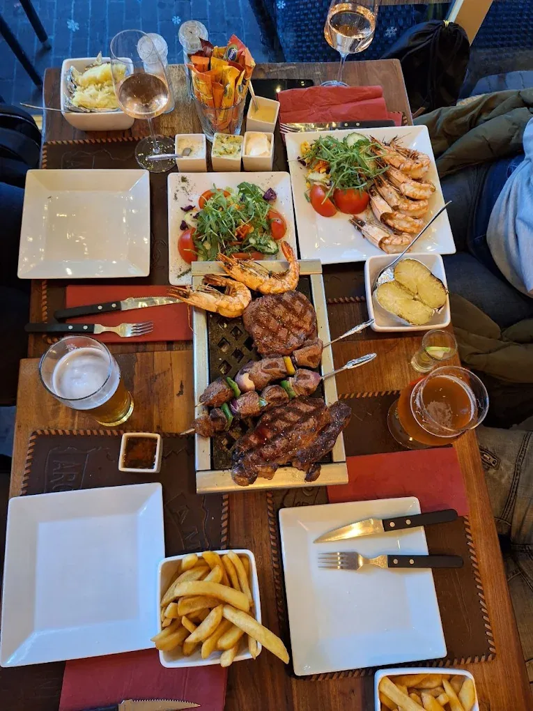
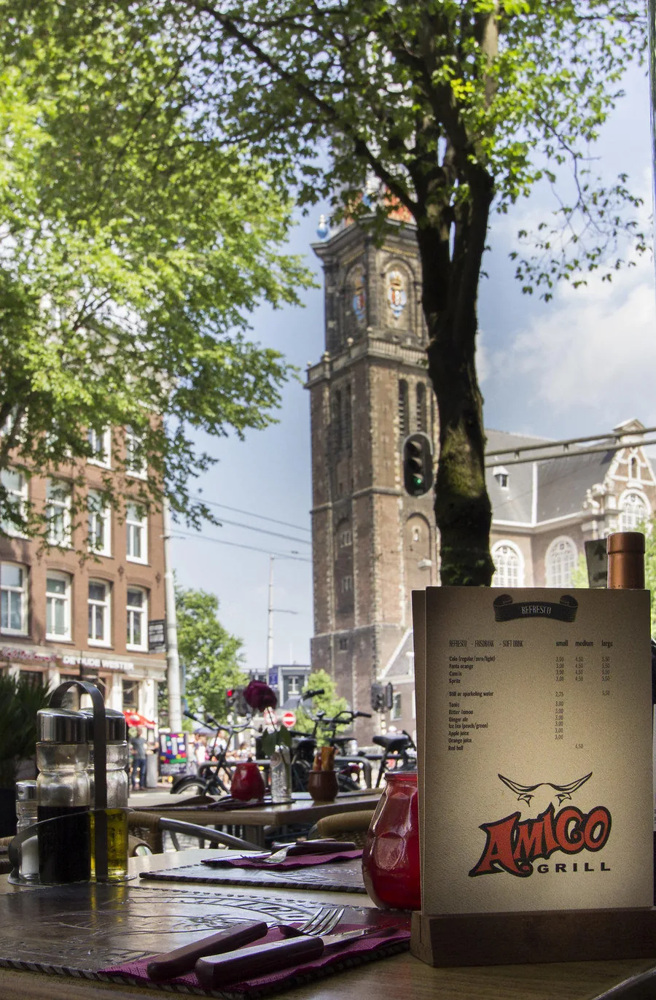

"Je proeft het verschil. Je proeft het altijd."
In Argentinië drinken ze geen koffie zoals wij. Ze drinken mate, uit een kalebas, urenlang, in een kring. En ze eten geen steak zoals wij. Ze eten asado. Wat wij zien als "een stuk vlees op een bord", is daar een heel middagritueel. Een familie-aangelegenheid. Een reden om een hele zondag vrij te houden, het vuur laat te stoken, en pas te gaan eten als iedereen er is.
Dat ritueel, die manier van kijken naar eten, is Amigo. Daarom noemen we onszelf een Argentijns restaurant, en geen steakhouse dat toevallig Argentijnse gerechten serveert. Dit is ons verhaal — in drie delen, over vlees, vuur en een plek aan de gracht.

Argentijns vlees, van de bron
Toen we in 2011 de deuren openden aan de Prinsengracht, hadden we één regel waar we niet van af zouden wijken: het vlees moet uit Argentinië komen. Niet via een groothandel waar de herkomst verwatert tot een vraagteken. Direct van onze vaste Argentijnse importeur, die betrekt van de Pampas, waar het vee op onbeperkte graslanden rondloopt, rustig gras eet en de tijd heeft om te zijn wat een koe hoort te zijn.
Elke week komt een nieuwe zending binnen. Bife de lomo, de ossenhaas, het malste stuk. Bife de chorizo, Argentijnse entrecote, vol van smaak. Bife ancho, rib-eye, rijk gemarmerd. Cuadril, picanha, met die kenmerkende vetrand.
Goede steak heeft geen hulp nodig. Alleen hitte, zout, en tijd.
Bij Amigo laten we het vlees vervolgens het werk doen. Geen marinade die alles overheerst. Geen saus die moet verbergen wat de kok niet aandurft. Alleen hitte, zout, tijd. En chimichurri aan tafel, als je daar zin in hebt.

De parrilla aan je tafel
Als je bij ons een steak bestelt, krijg je die niet op een bord. Je krijgt een kleine parrilla aan tafel, met gloeiende kolen, en daarop je vlees. Bij elke hap die je neemt kun je de volgende al horen nasissen.
Dat is geen gimmick. Dat is hoe Argentijnen al generaties eten. Thuis in de tuin, in een restaurant, op straat tijdens een voetbalwedstrijd. De parrilla is het centrum. Iedereen zit eromheen, het vlees ligt erboven, en de avond gebeurt vanzelf.
Wat wij hebben geadopteerd is niet het zelf-grillen-model waar je als gast met tangen moet werken. Het vlees is al perfect gegaard op onze keukengrill, precies zoals jij hem hebt besteld. De tafelgrill aan jouw kant houdt hem op temperatuur. Niemand hoeft te haasten. Je ossenhaas blijft rosé en warm tot je hem oppakt, ook als je eerst nog even doorpraat over dat nieuwe huis, die reis, die zoon die ineens groot is.
Niemand wil een koude steak. Dus hebben we een vuurtje naast het bord gezet. Simpele oplossing, oud idee.
Dit is waarom mensen bij ons langer blijven zitten dan gemiddeld. Waarom we zoveel vaste gasten hebben die al meer dan tien jaar terugkomen, die zeggen: "bij jullie voelt een avond als een avond".

Een plek die bij de stad hoort
Prinsengracht 188. Drie minuten lopen vanaf het Anne Frank Huis. Een steenworp van de Westerkerk. Aan een van de mooiste grachten van Amsterdam, in een pand dat al generaties lang een restaurant herbergt. De vloer is scheef, de muren zijn oud, en dat is precies zoals het hoort.
Er was eerder een tweede vestiging aan de Rozengracht. Die hebben we in 2024 losgelaten. Niet omdat het slecht liep, maar omdat we hebben geleerd dat één goede plek beter is dan twee redelijke plekken. Aan de Prinsengracht kunnen we de aandacht geven die we willen geven.
Wat de Prinsengracht bijzonder maakt voor een restaurant is dat het alles biedt waar mensen naar Amsterdam voor komen, zonder een tourist-trap te zijn. Geen doorloop van duizend gasten per dag. Wel een buurt waar Amsterdammers wonen, expats werken, en reizigers naartoe lopen omdat ze iets echts zoeken.
In de jaren dat we hier zitten hebben we Travelers' Choice awards van Tripadvisor verzameld, staan we rond plek 158 van de ruim 5.000 restaurants in Amsterdam, 8,8 op TheFork, 96% aanbeveling op Facebook. Maar daar kijken we niet zo naar. Wat we werkelijk bijhouden is hoe vaak dezelfde gezichten terugkomen. En dat aantal blijft groeien.
We hebben geen mediaopkomst nodig. We hebben jou terug nodig.